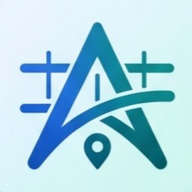

66%
spend 3+ hours a day on schoolwork
The median was 3.5 hours. That's a lot of time to waste deciding what to do first.

Avenor Try it freeAvenor tells you what to work on next, runs a distraction-free study session, and turns what you learned into review cards that come back right before you'd forget them.
Built by students for students in 8th grade through college.
We surveyed 33 students, most aged 14–18, before building Avenor 3.0. Here's what they said.
The median was 3.5 hours. That's a lot of time to waste deciding what to do first.
Only 9% said they face the problem right away. So Avenor makes starting tiny: Just 5 minutes.
Fun competes for attention. Study Mode goes full screen, nudges you back if you leave, and steers breaks away from short videos.
About 1 in 4 asked for something calming. Every break now has a 60-second breathing reset.
“Stop me from procrastin…”
“An app that keeps you f[ocused]…”
“Make you a plan so you…”
“Like a calming tool”
Avenor student survey, June 18–25, 2026. 33 valid responses (one response that wasn't genuine was removed). This is a small, self-selected sample, not national data. The full transcription and method are in the project's research/ folder.
Avenor already picked your most urgent task and why: “Due tomorrow · High priority · 2 sessions.” One tap and the timer is running.
When the ring fills, write one question you can now answer. It becomes a review card. Testing yourself is one of the most reliable ways to remember.
Stretch, drink water, or try a 60-second breathing reset. Then go again. Cards come back after 1, 2, 4, 8 and 16 days.
Avenor ranks your work by due date, priority and size, then shows one task with one big Start button, a daily focus ring and your streak. No more staring at a list.
Chem worksheet tmrw 30m ! fills in the due date, time, priority and class for you.
A full-screen timer with hold-to-quit, so ending early takes a deliberate choice.
Spaced-repetition cards made from your own questions. Two buttons: “Not yet” and “Got it.”
One missed day per week of streak is forgiven. A sick day won't erase 40 days of work.
No account, no ads, no tracking. Everything stays on your phone, which is also why Avenor costs almost nothing to run.
A working version of Avenor, right in your browser. Nothing is uploaded: your demo data stays in this browser.
Tip: in Focus, pick “1 min (demo)” to see a full round, including the recall card, without waiting 25 minutes.
Works like the apps you already use: standard tabs, swipe and menu actions, Undo instead of scary pop-ups.
Big Start buttons in the thumb zone and 44 px minimum targets. Quitting takes a deliberate hold.
Four tabs, one suggested task, three session lengths, two review answers.
Never more than 3–5 items at once. Big tasks show as small sessions.
The app does the setup: parsing, ranking, reminder times and colors.
One calm dark design on iPhone, Android and web, with the same colors everywhere.
Every session ends with a win. Stopping early “still counts.” Evenings end with a wrap-up.
Only the most important card on each screen is bright, so your eye goes straight to it.
How can technology support young people when life becomes overwhelming, without making it worse?
Graduate students experience anxiety and depression at two to six times the rate of the general population.
Wildey et al., 2022, Journal of American College HealthDuring COVID-19, nearly half of people aged 19–29 reported symptoms of anxiety or depression, more than other age groups.
Mojsa-Kaja et al., 2023, PLOS ONE“Social connection is a significant predictor of longevity and better physical, cognitive, and mental health.”
U.S. Surgeon General, 2023The paper found that AI therapy chatbots can miss clear signs of crisis (Wells, Stanford HAI, 2025). So Avenor does what software does well, making schoolwork feel manageable, and points to real people for everything else.
Avenor 3.0 for iPhone and Android, free forever, with every feature unlocked.
A Congressional App Challenge 2026 entry. Made by students.